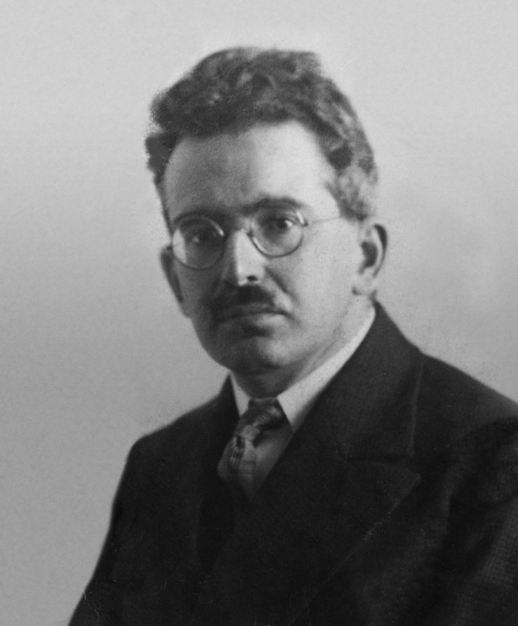

Wikimedia Commons · CC
1936년 벤야민은 사진과 영화가 — '지금-여기' 단 한 번뿐인 아우라를 풀어버린다고 보았습니다. 원본의 시간성, 유일성, 거리감 — 복제는 그것을 지웁니다.
그 곡선의 끝에 — AI가 있습니다. 사진은 한 번 누르면 1만 장. AI는 한 번 누르면 1만 가지 변주. 모든 것이 닮은 것의 닮은 것이 되어 갑니다.